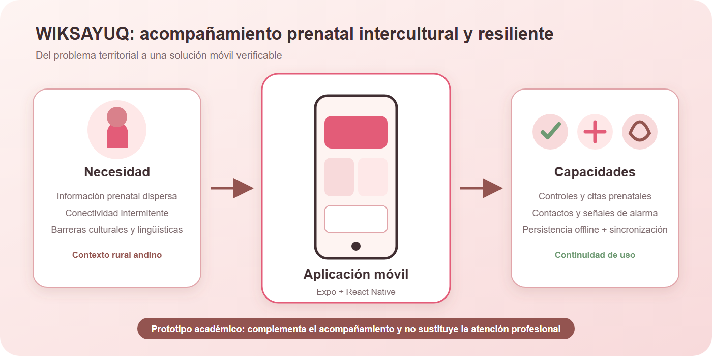

Diseño e implementación de WIKSAYUQ: una aplicación móvil intercultural con soporte offline para el acompañamiento prenatal
Design and Implementation of WIKSAYUQ: An Intercultural Offline-Capable Mobile Application for Prenatal Support
Autoría pendiente de completar antes de la entrega
[Nombre Apellido, ORCID, correo, afiliación, rol CRediT]
[Nombre Apellido, ORCID, correo, afiliación, rol CRediT]
[Nombre del programa académico y universidad]
Estado del manuscrito: borrador académico sustentado en el repositorio. Los autores, el enlace público de Figma/FigJam y los resultados de evaluación con participantes deben completarse con evidencia real. No se han fabricado participantes, tiempos, errores ni puntuaciones SUS.
Resumen
El acompañamiento prenatal mediante tecnologías móviles puede reducir barreras de acceso a información, organización y continuidad del seguimiento; sin embargo, su utilidad en contextos rurales depende de la conectividad, la legibilidad, la adecuación cultural y la seguridad con que se tratan los datos. Este artículo presenta el diseño y la implementación de WIKSAYUQ, un prototipo académico de aplicación móvil orientado al acompañamiento de gestantes en un contexto andino. Se siguió un proceso de diseño centrado en el usuario que articuló revisión de literatura, análisis del problema, especificación de requisitos, arquitectura de información, prototipado y desarrollo incremental. La solución utiliza Expo y React Native en el cliente, Express y TypeScript en la API, Prisma y PostgreSQL/Supabase en persistencia remota, y SQLite para operación local. El resultado técnico integra autenticación, perfil de gestante, calendario, citas, controles prenatales, historial, contactos de confianza, contenidos educativos y una estrategia de almacenamiento offline con sincronización diferida. La verificación incluyó trazabilidad entre requisitos y módulos, compilación estática de cliente y servidor, inspección del flujo local-remoto y auditoría de contraste de la paleta. Se identificaron como brechas críticas la evaluación formal con participantes, la consolidación del flujo SOS, el endurecimiento de seguridad, la accesibilidad integral y la cobertura automatizada de pruebas. WIKSAYUQ constituye una base funcional para validar una experiencia prenatal intercultural, pero no es un dispositivo médico ni reemplaza la atención profesional.
Palabras clave: salud móvil, atención prenatal, diseño centrado en el usuario, operación offline, interculturalidad.
Abstract
Mobile technologies can support prenatal care by reducing barriers to information access, organization, and continuity of follow-up. Their usefulness in rural settings, however, depends on connectivity, readability, cultural appropriateness, and secure data handling. This paper presents the design and implementation of WIKSAYUQ, an academic mobile application prototype intended to support pregnant users in an Andean context. A user-centered design process combined a literature review, problem analysis, requirements specification, information architecture, prototyping, and incremental development. The client uses Expo and React Native; the API uses Express and TypeScript; remote persistence relies on Prisma and PostgreSQL/Supabase; and SQLite supports local operation. The resulting prototype integrates authentication, a pregnancy profile, calendar, appointments, prenatal checkups, history, trusted contacts, educational content, and deferred synchronization for offline-created records. Technical verification covered traceability between requirements and modules, static compilation of client and server, inspection of the local-to-remote synchronization flow, and a contrast audit of the visual palette. The main remaining gaps are formal evaluation with representative participants, completion of the SOS workflow, security hardening, comprehensive accessibility, and automated test coverage. WIKSAYUQ provides a functional foundation for validating an intercultural prenatal experience, but it is not a medical device and does not replace professional healthcare.
Keywords: mobile health, prenatal care, user-centered design, offline-first, interculturality.

Fig. 1. Resumen gráfico: necesidad territorial, solución móvil y capacidades principales de WIKSAYUQ.
I. Introducción
La atención prenatal oportuna permite detectar factores de riesgo, orientar prácticas de autocuidado y coordinar la atención antes del parto. La Organización Mundial de la Salud recomienda una experiencia de atención positiva, con contactos periódicos, comunicación efectiva y respeto por la dignidad y el contexto de cada gestante [1]. Aun cuando estas recomendaciones son ampliamente aceptadas, su materialización puede verse limitada por distancias geográficas, conectividad irregular, fragmentación de la información y diferencias culturales o lingüísticas. Estas restricciones son especialmente relevantes para servicios digitales destinados a poblaciones rurales, donde una aplicación que dependa permanentemente de Internet puede interrumpir el registro y reducir la confianza de uso.
Las intervenciones de salud móvil o mHealth han mostrado potencial para reforzar la continuidad de la atención materna, enviar recordatorios y acercar información pertinente [2]-[4]. No obstante, la sola digitalización de un proceso no garantiza utilidad. La aceptación tecnológica depende de la percepción de utilidad y facilidad de uso [5]; la usabilidad debe evaluarse en tareas representativas [6], [7]; y el diseño debe considerar accesibilidad, privacidad y limitaciones de infraestructura [8], [9]. En consecuencia, el problema de diseño no consiste únicamente en construir pantallas, sino en articular necesidades, arquitectura técnica, interacción y mecanismos de verificación.
WIKSAYUQ surge como un prototipo académico para acompañar el embarazo mediante una experiencia móvil de identidad andina, organización personal y acceso a información. Su nombre y lenguaje visual buscan expresar cercanía y acompañamiento. El proyecto prioriza el perfil de gestante, el calendario, las citas, los controles prenatales, el historial, los contactos de confianza y la educación prenatal. Debido a la posibilidad de conectividad intermitente, también incorpora persistencia local y una cola de sincronización para determinadas operaciones.
La pregunta que guía este trabajo es: ¿cómo diseñar e implementar un prototipo móvil de acompañamiento prenatal que mantenga continuidad de uso ante conectividad limitada, preserve una identidad intercultural y permita verificar técnicamente sus funciones sin atribuirle capacidades clínicas no demostradas? El objetivo general es diseñar e implementar WIKSAYUQ como una base funcional y evaluable. Los objetivos específicos son: definir requisitos funcionales y no funcionales trazables; construir una arquitectura móvil y de servicios con soporte local; materializar una interfaz coherente y legible; y establecer un protocolo de evaluación que combine desempeño por tareas y la escala SUS.
Las contribuciones del artículo son cuatro. Primero, documenta una arquitectura aplicada para un prototipo prenatal móvil con almacenamiento local y sincronización diferida. Segundo, relaciona requisitos, módulos y evidencia del repositorio. Tercero, formaliza una paleta visual con usos y comprobaciones de contraste, evitando tratar la identidad gráfica como un elemento meramente decorativo. Cuarto, presenta un protocolo reproducible de evaluación con usuarios y distingue con claridad entre resultados técnicos obtenidos y evidencia empírica aún pendiente.
El resto del artículo se organiza de la siguiente manera. La Sección II sintetiza antecedentes de salud móvil, diseño centrado en el usuario y accesibilidad. La Sección III describe la metodología. La Sección IV presenta requisitos, arquitectura e implementación. La Sección V reporta resultados técnicos y el estado de la evaluación. La Sección VI discute alcances y limitaciones. Finalmente, la Sección VII presenta conclusiones y trabajo futuro.
II. Trabajos relacionados y fundamentos
A. Salud móvil y acompañamiento prenatal
La OMS plantea que las intervenciones digitales pueden apoyar, pero no sustituir, sistemas sanitarios funcionales [2]. En salud materna, los beneficios potenciales incluyen recordatorios, educación, apoyo a decisiones de autocuidado y comunicación entre usuarias y servicios. La revisión de Sondaal et al. encontró resultados prometedores de intervenciones mHealth en atención materna y neonatal en países de ingresos bajos y medios, aunque resaltó heterogeneidad metodológica y evidencia insuficiente para algunas variables [3]. Rahman et al. identificaron que las intervenciones móviles pueden mejorar dimensiones de atención prenatal, pero su efectividad depende del diseño del programa y del contexto [4].
Kabongo et al. analizaron intervenciones de telefonía móvil para mejorar la utilización de servicios maternos y destacaron la necesidad de considerar acceso, alfabetización y condiciones locales [10]. Estos trabajos respaldan la oportunidad del acompañamiento móvil, pero también muestran que no debe confundirse una interfaz funcional con efectividad clínica. WIKSAYUQ adopta esta precaución: se presenta como prototipo de acompañamiento y no como sistema diagnóstico.
B. Diseño centrado en el usuario y usabilidad
ISO 9241-210 define el diseño centrado en las personas como un proceso iterativo basado en la comprensión explícita de usuarios, tareas y entornos [7]. El proceso incluye especificar requisitos, producir soluciones de diseño y evaluarlas frente a dichos requisitos. Norman sostiene que la visibilidad, la retroalimentación y la correspondencia entre controles y resultados reducen la carga cognitiva [11]. Nielsen complementa este enfoque con heurísticas sobre consistencia, prevención de errores, reconocimiento y control del usuario [12].
Para medir percepción global de usabilidad, la System Usability Scale (SUS) ofrece diez ítems alternados y una puntuación normalizada de 0 a 100 [6]. Aunque SUS es breve y ampliamente utilizada, no reemplaza el análisis de tareas. Por ello, un protocolo adecuado debe registrar finalización, tiempo, errores, ayudas y observaciones, y luego triangular estos datos con la puntuación SUS.
C. Accesibilidad, aceptación y brecha digital
El Modelo de Aceptación Tecnológica relaciona la intención de uso con utilidad y facilidad percibidas [5]. Para que estas percepciones sean positivas, la interfaz debe ser comprensible y accesible. WCAG 2.2 establece criterios de contraste, foco, tamaño de objetivos y alternativas textuales relevantes también para experiencias móviles [8]. La brecha digital de género documentada por GSMA muestra que disponibilidad, costo, habilidades y seguridad condicionan el acceso móvil [13]. En un prototipo orientado a gestantes, estas consideraciones se traducen en textos claros, acciones visibles, tolerancia a conectividad limitada y ausencia de supuestos sobre alfabetización digital avanzada.
D. Comparación de fuentes y decisiones derivadas
Tabla I. Síntesis de antecedentes y aplicación en WIKSAYUQ
| Fuente | Aporte principal | Decisión aplicada o implicación |
|---|---|---|
| OMS, atención prenatal [1] | Experiencia positiva y contactos periódicos | Calendario, controles y contenidos sin emitir diagnóstico |
| OMS, intervenciones digitales [2] | La tecnología complementa al sistema de salud | Advertencia visible y alcance académico |
| Sondaal et al. [3] | Potencial y heterogeneidad de mHealth materna | Evaluación separada de factibilidad, usabilidad y efecto clínico |
| Rahman et al. [4] | Resultados dependientes del contexto | Adaptación al contexto andino y validación local pendiente |
| Davis [5] | Utilidad y facilidad percibidas | Tareas de evaluación y SUS |
| Brooke [6] | Escala breve de usabilidad | Instrumento SUS de diez ítems |
| ISO 9241-210 [7] | Proceso iterativo centrado en personas | Requisitos, prototipo, implementación y evaluación |
| W3C WCAG 2.2 [8] | Contraste, foco y operabilidad | Auditoría de paleta y backlog de accesibilidad |
| OWASP MASVS [9] | Controles de seguridad móvil | Brechas de almacenamiento, sesión y comunicaciones |
| Kabongo et al. [10] | Condiciones de acceso y utilización | Operación offline y contenido contextual |
| Norman [11] | Visibilidad y retroalimentación | Estados de guardado y sincronización |
| Nielsen [12] | Heurísticas de usabilidad | Consistencia, prevención y mensajes de error |
| GSMA [13] | Brecha móvil de género | Diseño de baja fricción y conectividad tolerante |
| Labrique et al. [14] | Integración de salud digital con sistemas reales | Arquitectura API y necesidad de gobernanza |
| Shneiderman et al. [15] | Reglas de interacción y control | Navegación persistente y acciones reversibles cuando aplica |
La comparación muestra una convergencia: un sistema prenatal útil requiere simultáneamente pertinencia de contenido, facilidad de uso, accesibilidad, seguridad y adaptación al entorno. También revela una diferencia entre evidencia de intervención y evidencia de interfaz. Los estudios de salud materna evalúan resultados sanitarios o de utilización, mientras que las normas de IHC evalúan interacción. El presente trabajo se limita a la segunda categoría y a la factibilidad técnica; cualquier afirmación de impacto clínico requerirá un estudio posterior con aprobación ética y diseño apropiado.
III. Metodología
A. Enfoque y etapas
Se adoptó un proceso de diseño centrado en el usuario inspirado en ISO 9241-210 [7], adaptado al alcance de un proyecto académico. El proceso se organizó en seis etapas: comprensión del contexto, revisión de literatura, especificación de requisitos, arquitectura de información y prototipado, implementación incremental, y verificación técnica con preparación de evaluación de usabilidad. La Fig. 2 resume la relación entre la aplicación móvil, el almacenamiento local, la API y la base de datos remota.

Fig. 2. Arquitectura general de WIKSAYUQ.
La comprensión del contexto partió del problema documentado por el proyecto: acompañar la organización prenatal en un entorno donde la conectividad puede ser intermitente y donde la identidad cultural debe reflejar cercanía. La revisión bibliográfica delimitó buenas prácticas y evitó atribuir eficacia sanitaria al prototipo. En la especificación se distinguieron requisitos funcionales y no funcionales. El prototipado exploró navegación, jerarquía y estilo visual. La implementación se realizó por módulos. La verificación final combinó inspección del código, compilación estática y revisión de artefactos.
B. Usuarios objetivo y alcance de investigación
El usuario primario definido por el producto es una persona gestante que necesita consultar próximas citas, registrar controles, revisar su historial, organizar contactos de confianza y acceder a información prenatal. Como usuario secundario se considera al personal de salud que, en una evolución futura, podría revisar información autorizada y acompañar el seguimiento. Un tercer actor es el contacto de confianza, vinculado al flujo de apoyo y emergencia.
El repositorio no contiene evidencia verificable de entrevistas, encuestas, consentimiento informado ni sesiones de prueba con participantes. Por esta razón, estos perfiles se tratan como proto-personas de diseño y no como hallazgos de investigación. Antes de presentar el trabajo como diseño validado con usuarios, el equipo debe anexar objetivos de investigación, muestra, criterios de inclusión, instrumento, consentimiento y resultados anonimizados.
Tabla II. Proto-personas y necesidades de diseño
| Actor | Meta principal | Riesgos o barreras | Respuesta de diseño |
|---|---|---|---|
| Gestante | Organizar el seguimiento y encontrar información | Conectividad, carga cognitiva, datos sensibles | Navegación móvil, historial, persistencia local y textos claros |
| Personal de salud | Revisar información autorizada | Roles, privacidad y trazabilidad | Módulo futuro con control de acceso y auditoría |
| Contacto de confianza | Recibir información de apoyo | Consentimiento y datos desactualizados | Gestión explícita de contactos y confirmación de cambios |
C. Requisitos y criterios de aceptación
El inventario técnico consolidó 46 requisitos funcionales y 20 no funcionales en el informe del proyecto. Para el artículo se priorizaron los flujos críticos mostrados en la Tabla III. Cada criterio de aceptación se formuló como comportamiento observable. La prioridad Alta representa funciones necesarias para una demostración coherente; Media corresponde a capacidades importantes no críticas; y Futura identifica módulos fuera del alcance actual.
Tabla III. Requisitos funcionales priorizados
| ID | Requisito | Prioridad | Criterio de aceptación | Estado |
|---|---|---|---|---|
| RF-01 | Registrar e iniciar sesión | Alta | Credenciales válidas crean sesión y navegan al rol correspondiente | Implementado |
| RF-02 | Mantener perfil de gestante | Alta | Datos válidos se visualizan y actualizan sin perder campos requeridos | Implementado |
| RF-03 | Consultar calendario y citas | Alta | La usuaria identifica fechas y detalle de citas | Implementado |
| RF-04 | Registrar control prenatal | Alta | El control se guarda local o remotamente y aparece en historial | Implementado parcial |
| RF-05 | Gestionar contactos | Alta | Se puede crear, editar, eliminar y marcar contacto principal | Implementado parcial |
| RF-06 | Consultar historial | Alta | Citas, controles y registros aparecen ordenados | Implementado parcial |
| RF-07 | Operar sin conexión | Alta | La escritura offline se encola y comunica su estado | Implementado parcial |
| RF-08 | Ejecutar flujo SOS | Alta | Solicitud confirmada notifica ubicación y contactos autorizados | Pendiente crítico |
| RF-09 | Consultar contenidos | Media | Los artículos se listan y abren de forma legible | Implementado |
| RF-10 | Cambiar idioma | Media | La interfaz visible cambia sin cadenas residuales | Implementado parcial |
| RF-11 | Acceder como personal de salud | Futura | El rol autorizado revisa pacientes asignados | Pendiente |
Entre los requisitos no funcionales se definieron privacidad, seguridad, disponibilidad, compatibilidad móvil, accesibilidad, mantenibilidad y rendimiento. Los más relevantes para el alcance actual son: orientación vertical, navegación táctil, almacenamiento local, validación de entradas, comunicación HTTPS en despliegue, protección de credenciales, contraste mínimo AA y advertencia de que el producto no sustituye atención profesional.
D. Arquitectura de información y prototipado
La navegación principal de gestante se organizó en cinco destinos: Inicio, Calendario, SOS, Historial y Perfil. Inicio concentra información inmediata; Calendario organiza citas y eventos; SOS reserva una acción crítica; Historial agrupa registros; y Perfil reúne preferencias y datos personales. Esta arquitectura aplica reconocimiento sobre recuerdo y mantiene accesibles los destinos más frecuentes [11], [12].
Los wireframes separaron las vistas de gestante y personal de salud. La Fig. 3 muestra la propuesta móvil para gestante. El enlace público de Figma/FigJam, el flujo navegable y la evidencia de iteraciones deben agregarse antes de la entrega final: [PENDIENTE: URL pública con permiso de visualización].

Fig. 3. Wireframes consolidados del flujo de gestante.
E. Sistema visual y accesibilidad
La identidad visual utiliza rosados cálidos, crema, blanco y terracota. La paleta se definió como tokens para evitar variaciones arbitrarias y facilitar mantenimiento. La Tabla IV documenta cada valor y su función. El contraste se calculó con luminancia relativa conforme a WCAG. textPrimary sobre background alcanza aproximadamente 11.69:1 y textSecondary sobre background 4.68:1, ambos adecuados para texto normal AA. Blanco sobre primary alcanza aproximadamente 3.48:1 y no debe usarse en texto normal sin ajustar color, tamaño o peso.
Tabla IV. Paleta de colores de WIKSAYUQ
| Token | Hex | Uso recomendado | Observación |
|---|---|---|---|
primary |
#E35B78 |
Acciones primarias | Blanco solo en texto grande; revisar AA |
primaryDark |
#C94066 |
Estado presionado y énfasis | Preferible para reforzar contraste |
secondary |
#D9818B |
Acentos secundarios | No usar como único indicador de estado |
background |
#FEF4F2 |
Fondo principal | Base cálida de baja saturación |
backgroundSoft |
#FEE8E8 |
Secciones suaves | Separación visual no crítica |
surface |
#FFFFFF |
Tarjetas y campos | Combinar con borde o sombra moderada |
roseLight |
#F8DADB |
Chips y selección | Requiere texto oscuro |
border |
#E1A5AA |
Bordes y divisores | No reemplaza etiquetas |
textPrimary |
#3F2F31 |
Texto principal | Contraste alto sobre fondos claros |
textSecondary |
#7D6A6D |
Texto auxiliar | AA sobre background |
danger |
#F05A5A |
Errores y emergencias | Acompañar con icono y texto |
success |
#6E9A73 |
Confirmaciones | Acompañar con mensaje explícito |
terracotta |
#935450 |
Acento cultural y avisos | Adecuado para énfasis sobre fondo claro |
El backlog de accesibilidad incluye etiquetas para lector de pantalla, orden de foco, escalado tipográfico, objetivos táctiles de al menos 44 por 44 puntos, reducción de movimiento y validación con tecnologías de asistencia. El color no debe ser el único canal para comunicar éxito, error o urgencia [8].
F. Protocolo de evaluación de usabilidad
Se preparó un protocolo para un mínimo de cinco participantes representativos, consistente con una evaluación formativa de prototipo. La convocatoria debe documentar criterios de inclusión, exclusión, consentimiento y tratamiento de datos. Para proteger a las personas, las demostraciones deben utilizar cuentas y registros ficticios o anonimizados. Cada sesión debe registrar pantalla y audio solo con autorización explícita.
Las tareas propuestas son: T1, crear una cuenta de prueba e iniciar sesión; T2, identificar la próxima cita y abrir su detalle; T3, registrar un control prenatal con el dispositivo sin conexión simulada y comprobar el estado pendiente; T4, crear un contacto de confianza y marcarlo como principal; T5, localizar las señales de alarma y explicar qué haría ante una emergencia. El flujo SOS real no debe activarse con números de emergencia durante pruebas académicas.
Las métricas por tarea son finalización, tiempo, errores, solicitudes de ayuda, comentario verbal y severidad del problema. Después de las tareas se administra SUS con sus diez ítems y escala de cinco puntos. Para ítems impares se resta uno a la respuesta; para pares se resta la respuesta de cinco; la suma se multiplica por 2.5. También se formulan tres preguntas abiertas: qué resultó más claro, qué generó duda y qué función cambiaría primero.
El protocolo aún no fue ejecutado con evidencia disponible en el repositorio. Por lo tanto, las tablas de resultados de usuarios se presentan como instrumentos vacíos en el Apéndice A. Una puntuación, promedio o conclusión de usabilidad solo debe incorporarse después de conservar los formularios y la evidencia anonimizada correspondiente.
IV. Implementación
A. Cliente móvil
El cliente utiliza Expo, React Native y TypeScript. Expo Router organiza navegación pública y rutas por rol. Zustand mantiene estado de sesión y preferencias; React Hook Form y Zod apoyan formularios y validación; TanStack Query administra solicitudes; i18next habilita internacionalización; y Expo SQLite proporciona persistencia local. La interfaz reutiliza componentes como texto tipográfico, botones, campos y superficies para conservar consistencia.
La pantalla de acceso presenta la identidad visual, campos de credenciales, acciones de inicio y registro, y una advertencia visible: el sistema es un prototipo académico y no reemplaza evaluación, diagnóstico ni recomendación profesional. Esta decisión responde al carácter sensible del dominio y reduce el riesgo de interpretar la aplicación como herramienta clínica certificada.
B. API y persistencia remota
El servidor se implementó con Express y TypeScript. Prisma actúa como ORM sobre PostgreSQL/Supabase. La API incluye autenticación, rutas para perfiles, citas, controles, contactos, historial y contenidos. Zod valida entradas en los puntos implementados; JSON Web Tokens mantienen sesiones; bcrypt protege contraseñas; Helmet, CORS y limitación de solicitudes aportan controles básicos de superficie HTTP.
El despliegue objetivo separa cliente, API y base de datos. Esta separación permite evolucionar políticas de autorización y auditoría sin acoplarlas a la interfaz. No obstante, la presencia de bibliotecas de seguridad no garantiza una configuración segura. Antes de producción deben verificarse rotación de secretos, expiración y revocación de sesión, políticas de CORS, mínimos privilegios en base de datos, cifrado en tránsito y reposo, registros de auditoría y respuesta a incidentes [9].
C. Persistencia local y sincronización
La continuidad offline se implementó mediante un repositorio base y repositorios locales para entidades de uso frecuente. BaseRepository<T> encapsula operaciones comunes de lectura y escritura. SyncService.saveOrQueue intenta guardar remotamente cuando existe conectividad; si la operación no puede completarse, persiste la carga en SQLite y retorna un resultado explícito con success, synced, localId y data. Los consumidores informan si un registro quedó sincronizado o pendiente.

Fig. 4. Flujo de escritura remota, persistencia local y sincronización diferida.
Este patrón evita que una pérdida temporal de red implique pérdida inmediata del registro. Sin embargo, una implementación offline completa requiere políticas adicionales: identificadores idempotentes, detección de duplicados, resolución de conflictos, reintentos con espera incremental, orden de dependencias, marca temporal confiable, eliminación segura y observabilidad de la cola. El estado actual se clasifica como offline parcial porque no todos los módulos usan la misma ruta y no existe una política global de conflictos.
D. Tratamiento de errores y retroalimentación
Los flujos de escritura diferencian tres estados: guardado sincronizado, guardado local pendiente y fallo. Esta distinción es importante para no mostrar éxito remoto cuando solo existe persistencia local. Los mensajes de interfaz deben explicar el resultado en lenguaje directo y permitir reintento. Para operaciones sensibles se recomienda evitar mensajes ambiguos y conservar un registro técnico que no exponga datos personales.
E. Ética, privacidad y seguridad
La información de embarazo y salud puede ser sensible. El principio de minimización exige recolectar solo lo necesario para la función declarada. La demostración académica debe utilizar datos ficticios. Cualquier estudio con gestantes debe contar con consentimiento informado, explicación del propósito, posibilidad de abandono, anonimización y resguardo de grabaciones. Si se incorporan recomendaciones clínicas, interoperabilidad o decisiones automatizadas, se requerirá revisión especializada adicional.
WIKSAYUQ no emite diagnósticos ni sustituye la atención. La función SOS debe diseñarse con especial cautela: confirmación deliberada, información clara sobre lo que ocurrirá, permisos de ubicación solicitados en contexto, manejo de ausencia de señal, prueba con contactos ficticios y rutas alternativas visibles. Mientras este flujo no esté completo y validado, no debe presentarse como mecanismo garantizado de emergencia.
V. Resultados
A. Resultado funcional
El resultado principal es un prototipo integrado con cliente móvil, API y persistencia. Los módulos implementados permiten registro e inicio de sesión, visualización de perfil, calendario, citas, registro y consulta parcial de controles, historial, contactos, contenidos y preferencias. La navegación de gestante dispone de cinco destinos principales. La identidad visual se centralizó en tokens y se documentó con valores hexadecimales y funciones de uso.
La Tabla V resume la cobertura funcional observada en el repositorio. “Implementado” indica existencia de flujo conectado; “Parcial” significa que el flujo tiene restricciones o no cubre todos los estados; “Pendiente” representa ausencia o incapacidad de demostrar el criterio de aceptación.
Tabla V. Cobertura observada del prototipo
| Área | Evidencia | Resultado |
|---|---|---|
| Autenticación | Rutas públicas, store de sesión y API | Implementado |
| Perfil de gestante | Pantalla y servicios asociados | Implementado |
| Calendario y citas | Vistas, navegación y API | Implementado |
| Controles prenatales | Formulario, historial y repositorio local | Parcial |
| Contactos | CRUD y selección de principal | Parcial |
| Historial | Consulta remota con respaldo local | Parcial |
| Contenido educativo | Lista y detalle | Implementado |
| Internacionalización | Infraestructura y recursos | Parcial |
| Sincronización offline | Repositorios y cola para operaciones seleccionadas | Parcial |
| SOS | Pantalla o intención de flujo sin garantía extremo a extremo | Pendiente crítico |
| Portal de personal de salud | Wireframes y alcance futuro | Pendiente |
B. Verificación técnica
La compilación estática del frontend y backend se utilizó como criterio mínimo de integridad. En la verificación del 29 de julio de 2026, npx tsc --noEmit en el cliente y npm run typecheck en el servidor finalizaron sin errores. También se inspeccionaron los consumidores de SyncService para alinear el contrato de retorno y se protegió el acceso al manejador SQLite en historial. Estas correcciones reducen fallos por propiedades inexistentes y acceso a base local no inicializada.
La verificación no equivale a cobertura de pruebas. No se dispone de evidencia de una suite automatizada integral para los flujos críticos ni de pruebas de integración de sincronización. Por ello, el estado se reporta como compilación satisfactoria con pruebas funcionales automatizadas pendientes. Antes de una liberación se requieren casos unitarios para repositorios, integración API-base de datos, pruebas de reintento y conflicto, y pruebas E2E para autenticación, controles, contactos y sesión expirada.
C. Resultado visual
La interfaz logró coherencia básica mediante el uso de tokens y componentes compartidos. El fondo crema y los acentos rosados producen una identidad cálida; el terracota aporta diferenciación cultural sin depender de ornamentación excesiva. La auditoría encontró contraste alto para textos oscuros sobre fondos claros. También detectó que el uso de blanco sobre el color primario no alcanza 4.5:1 para texto normal, por lo que este patrón debe ajustarse o limitarse a tipografía grande.
D. Evaluación con participantes
No existen resultados verificables de participantes en la versión analizada. En consecuencia, no se informa tasa de éxito, tiempo promedio, número de errores, puntuación SUS ni citas de usuarios. La Tabla VI deja explícito el estado de la evidencia necesaria. Esta ausencia es una limitación central y no debe ocultarse mediante datos simulados.
Tabla VI. Estado de evidencia de evaluación
| Evidencia requerida | Estado | Acción para cierre |
|---|---|---|
| Objetivos y preguntas de investigación | Preparado en protocolo | Validar con docente/equipo |
| Participantes representativos | Sin evidencia | Reclutar mínimo cinco con criterios documentados |
| Consentimiento informado | Sin evidencia | Firmar y custodiar formato |
| Grabación o registro fotográfico | Sin evidencia | Obtener autorización y anonimizar |
| Tiempos, errores y ayudas | Instrumento preparado | Ejecutar tareas y completar tabla |
| SUS de diez ítems | Instrumento preparado | Aplicar y calcular sin alterar respuestas |
| Hallazgos y mejoras priorizadas | Pendiente | Triangular observación, desempeño y SUS |
VI. Discusión
A. Correspondencia con antecedentes
El prototipo coincide con la literatura en tres decisiones: acompañamiento antes que diagnóstico, soporte a organización y educación, y adaptación al contexto de acceso. La operación offline responde directamente a las restricciones señaladas en estudios de salud móvil [3], [4], [10]. La navegación persistente y los estados explícitos aplican principios de visibilidad y control [11], [12]. La advertencia sanitaria materializa la recomendación de que una intervención digital complemente y no sustituya servicios [2].
No obstante, el proyecto todavía no puede afirmar mejoras en adherencia prenatal, conocimiento, tranquilidad o uso de servicios. Tales resultados requieren diseño de investigación, línea base, muestra, instrumentos y análisis. Incluso una puntuación SUS alta solo demostraría percepción de usabilidad, no efectividad clínica. Esta separación entre utilidad técnica, usabilidad y resultado sanitario es esencial para evitar conclusiones excesivas.
B. Valor de la operación offline
El enfoque de escritura local con sincronización diferida aporta resiliencia y mejora la continuidad percibida. Su principal valor no es funcionar permanentemente sin Internet, sino evitar que una interrupción breve elimine el trabajo de la usuaria. El contrato de retorno explícito permite que la interfaz comunique si un registro fue sincronizado o permanece local.
La principal deuda es la consistencia distribuida. Sin idempotencia y resolución de conflictos, una reconexión podría duplicar datos o sobrescribir cambios. La siguiente iteración debe definir una máquina de estados por operación: pendiente, en proceso, sincronizada, bloqueada y descartada. También debe incorporar un identificador estable generado en el dispositivo y reglas de precedencia por tipo de dato. Para información clínica, estas reglas deben revisarse con especialistas y conservar trazabilidad.
C. Identidad intercultural
La paleta cálida, los recursos visuales y el nombre brindan una identidad diferenciada. Sin embargo, la interculturalidad no se demuestra solo mediante color o iconografía. Requiere lenguaje comprensible, traducción revisada por hablantes, adecuación de ejemplos, investigación contextual y participación de comunidades. La infraestructura de internacionalización es un punto de partida, pero una traducción literal no garantiza pertinencia. El equipo debe validar terminología, tono y comprensión con participantes del contexto objetivo.
D. Accesibilidad y seguridad
La auditoría de contraste produjo una mejora concreta: documentar combinaciones seguras y señalar una combinación que no cumple AA para texto normal. Aun así, accesibilidad abarca lector de pantalla, foco, tamaño, movimiento, errores y comprensión. La evaluación futura debe incluir al menos inspección con TalkBack o VoiceOver y pruebas de escalado de fuente.
En seguridad, la arquitectura dispone de controles iniciales, pero el dominio exige mayor profundidad. Deben revisarse autorización por objeto, expiración de tokens, exposición de datos en registros, protección de almacenamiento local, borrado de cuenta, política de retención y consentimiento. Un sistema de emergencia añade riesgos de ubicación y terceros. La función SOS no debe liberarse hasta probar escenarios de red, permisos denegados, contactos inválidos y fallos de entrega.
E. Limitaciones
La primera limitación es la ausencia de evidencia de investigación y evaluación con usuarios. La segunda es la falta de un enlace público verificable al prototipo de Figma/FigJam dentro del repositorio. La tercera es la cobertura parcial de sincronización y la ausencia de pruebas automatizadas suficientes. La cuarta es que el portal de personal de salud está representado principalmente como propuesta. La quinta es que la auditoría técnica fue realizada sobre el código y sus artefactos, no en un despliegue clínico ni con monitoreo de producción.
La condición académica también limita el tratamiento del dominio. El contenido de salud debe ser revisado por profesionales y mantener referencias y fechas de actualización. La aplicación no ha sido evaluada como dispositivo médico, no cuenta con certificación clínica y no debe utilizarse para diagnóstico o manejo de emergencias reales.
VII. Conclusiones y trabajo futuro
WIKSAYUQ materializa una arquitectura funcional de acompañamiento prenatal móvil que integra cliente, API, persistencia remota y almacenamiento local; esta base permite demostrar flujos de organización sin depender completamente de conectividad continua.
La centralización de tokens, la documentación de la paleta y la arquitectura de navegación ofrecen coherencia visual y trazabilidad. La revisión de contraste identificó una combinación que debe corregirse, evidenciando el valor de evaluar el sistema visual con criterios medibles.
La sincronización diferida mejora resiliencia, pero permanece parcial. Para considerarla confiable debe incorporar idempotencia, resolución de conflictos, observabilidad, pruebas de reintento y cobertura homogénea de módulos.
El prototipo no dispone todavía de evidencia suficiente para afirmar usabilidad con usuarios ni impacto en salud. La evaluación con mínimo cinco participantes, tareas representativas, tiempos, errores, SUS y evidencia anonimizada es el siguiente hito obligatorio.
El trabajo futuro debe priorizar el flujo SOS extremo a extremo, seguridad y privacidad, accesibilidad con tecnologías de asistencia, validación intercultural, portal de personal de salud y pruebas automatizadas. Cualquier evolución clínica requerirá participación profesional, revisión ética y delimitación regulatoria.
WIKSAYUQ es un prototipo académico. No reemplaza la evaluación, diagnóstico o recomendación de profesionales de la salud.
Agradecimientos
[PENDIENTE: indicar personas o instituciones que contribuyeron sin cumplir criterios de autoría. Eliminar esta sección si no corresponde.]
Contribuciones de autoría
[PENDIENTE: completar roles CRediT reales, por ejemplo: conceptualización, metodología, software, validación, investigación, recursos, curación de datos, redacción y visualización. No asignar roles sin confirmación de cada integrante.]
Referencias
[1] World Health Organization, WHO Recommendations on Antenatal Care for a Positive Pregnancy Experience. Geneva, Switzerland: WHO, 2016. [Online]. Available: https://www.who.int/publications/i/item/9789241549912
[2] World Health Organization, WHO Guideline: Recommendations on Digital Interventions for Health System Strengthening. Geneva, Switzerland: WHO, 2019. [Online]. Available: https://www.who.int/publications/i/item/9789241550505
[3] S. F. V. Sondaal, J. L. Browne, M. Amoakoh-Coleman, A. Borgstein, A. Miltenburg, M. Verwijs, and K. Klipstein-Grobusch, “Assessing the effect of mHealth interventions in improving maternal and neonatal care in low- and middle-income countries: A systematic review,” PLoS ONE, vol. 11, no. 5, Art. no. e0154664, 2016, doi: 10.1371/journal.pone.0154664.
[4] M. O. Rahman, N. Yamaji, Y. Nagamatsu, and E. Ota, “Effects of mHealth interventions on improving antenatal care visits and skilled delivery care in low- and middle-income countries: Systematic review and meta-analysis,” Journal of Medical Internet Research, vol. 24, no. 4, Art. no. e34061, 2022, doi: 10.2196/34061.
[5] F. D. Davis, “Perceived usefulness, perceived ease of use, and user acceptance of information technology,” MIS Quarterly, vol. 13, no. 3, pp. 319-340, 1989, doi: 10.2307/249008.
[6] J. Brooke, “SUS: A ‘quick and dirty’ usability scale,” in Usability Evaluation in Industry, P. W. Jordan, B. Thomas, B. A. Weerdmeester, and I. L. McClelland, Eds. London, U.K.: Taylor & Francis, 1996, pp. 189-194.
[7] International Organization for Standardization, ISO 9241-210:2019 Ergonomics of Human-System Interaction—Part 210: Human-Centred Design for Interactive Systems. Geneva, Switzerland: ISO, 2019.
[8] World Wide Web Consortium, “Web Content Accessibility Guidelines (WCAG) 2.2,” W3C Recommendation, Oct. 2023. [Online]. Available: https://www.w3.org/TR/WCAG22/
[9] OWASP Foundation, “Mobile Application Security Verification Standard,” OWASP MASVS, 2024. [Online]. Available: https://mas.owasp.org/MASVS/
[10] E. M. Kabongo, C. Mukumbang, P. Delobelle, and B. Nicol, “Explaining the impact of mHealth on maternal and child health care in low- and middle-income countries: A realist synthesis,” BMC Pregnancy and Childbirth, vol. 21, 2021, doi: 10.1186/s12884-021-03684-x.
[11] D. A. Norman, The Design of Everyday Things, rev. ed. New York, NY, USA: Basic Books, 2013.
[12] J. Nielsen, Usability Engineering. San Francisco, CA, USA: Morgan Kaufmann, 1993.
[13] GSMA, The Mobile Gender Gap Report 2024. London, U.K.: GSMA, 2024. [Online]. Available: https://www.gsma.com/r/gender-gap/
[14] A. B. Labrique, L. W. Vasudevan, E. Kochi, R. Fabricant, and G. Mehl, “mHealth innovations as health system strengthening tools: 12 common applications and a visual framework,” Global Health: Science and Practice, vol. 1, no. 2, pp. 160-171, 2013, doi: 10.9745/GHSP-D-13-00031.
[15] B. Shneiderman, C. Plaisant, M. S. Cohen, S. Jacobs, N. Elmqvist, and N. Diakopoulos, Designing the User Interface: Strategies for Effective Human-Computer Interaction, 6th ed. Boston, MA, USA: Pearson, 2016.
Apéndice A. Instrumento para evaluación con usuarios
Registro por tarea
| Participante anónimo | Tarea | Completó | Tiempo | Errores | Ayudas | Observación |
|---|---|---|---|---|---|---|
| P__ | T__ | Pendiente | Pendiente | Pendiente | Pendiente | Pendiente |
SUS en español
Cada afirmación se responde de 1, “totalmente en desacuerdo”, a 5, “totalmente de acuerdo”.
- Creo que usaría este sistema con frecuencia.
- Encontré el sistema innecesariamente complejo.
- Pensé que el sistema era fácil de usar.
- Creo que necesitaría apoyo técnico para usarlo.
- Encontré que las funciones estaban bien integradas.
- Pensé que había demasiada inconsistencia.
- Imagino que la mayoría aprendería a usarlo rápidamente.
- Encontré el sistema muy incómodo de usar.
- Me sentí con confianza al usar el sistema.
- Necesité aprender muchas cosas antes de empezar.
Para ítems 1, 3, 5, 7 y 9 se calcula respuesta menos 1. Para ítems 2, 4, 6, 8 y 10 se calcula 5 menos respuesta. La suma se multiplica por 2.5.
Apéndice B. Evidencias pendientes de anexar
- URL pública de Figma/FigJam con permisos de visualización.
- Evidencia de objetivos, preguntas, participantes e instrumento de investigación.
- Consentimientos informados custodiados por el equipo.
- Capturas o grabaciones anonimizadas de las sesiones.
- Tabla completa de tiempos, errores, ayudas y finalización.
- Respuestas individuales SUS anonimizadas y cálculo reproducible.
- Lista de mejoras priorizadas y evidencia de iteraciones del prototipo.
- Integrantes, roles, autores, afiliación, correos y ORCID.